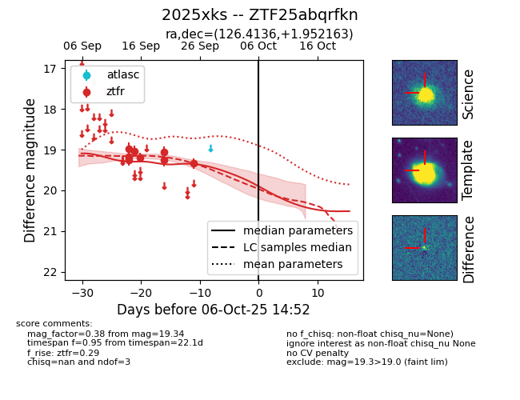
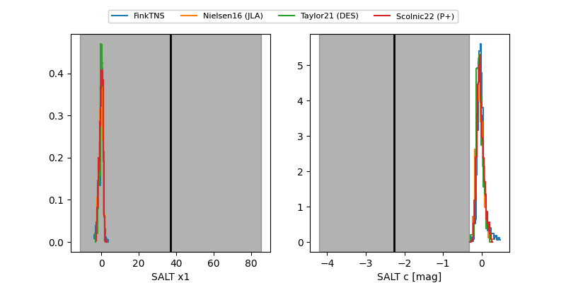

FINK: ZTF25abqrfkn
Lasair: ZTF25abqrfkn
ALeRCE: ZTF25abqrfkn
TNS: 2025xks
YSE: 2025xks
ZTF25abqrfkn (ztf,fink)
2025xks (tns,yse)
equatorial (ra, dec) = (126.4136,+1.95216)
galactic (l, b) = (222.3396,+21.77602)


last ztfr=19.34
8 ztfr detections